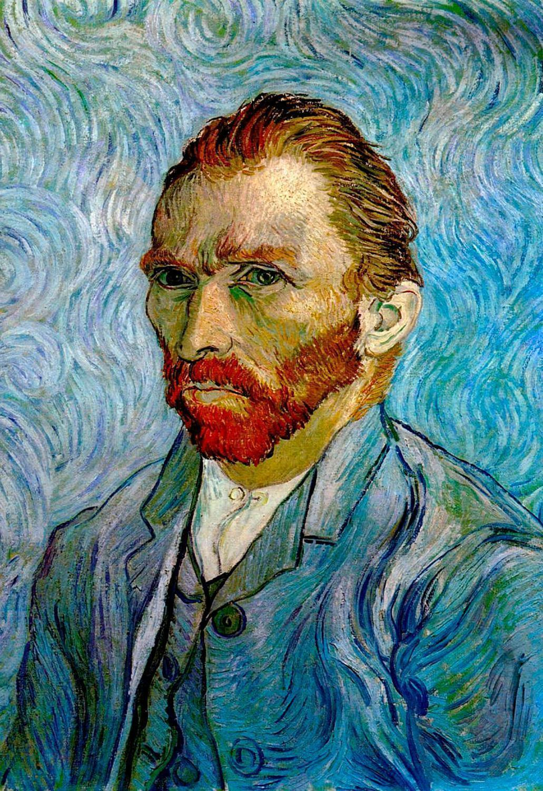

Vincent Van Gogh

Van Gogh foi um pintor pós-impressionista holandês nascido em 1853. Suas obras intensas e emocionais revolucionaram a arte moderna, mesmo tendo vivido em relativa obscuridade.
Principais obras

Noite Estrelada (1889)

Girassóis (1888)